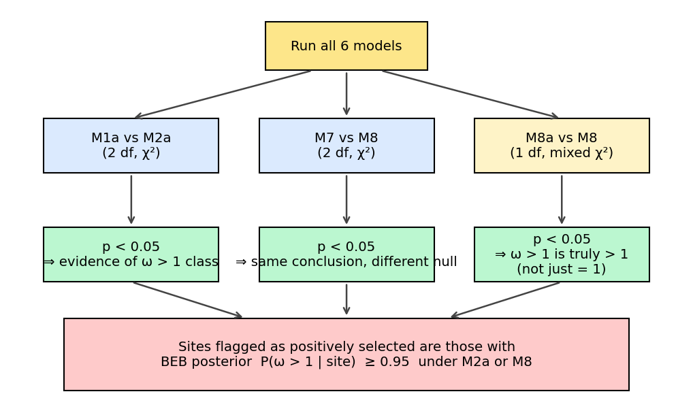
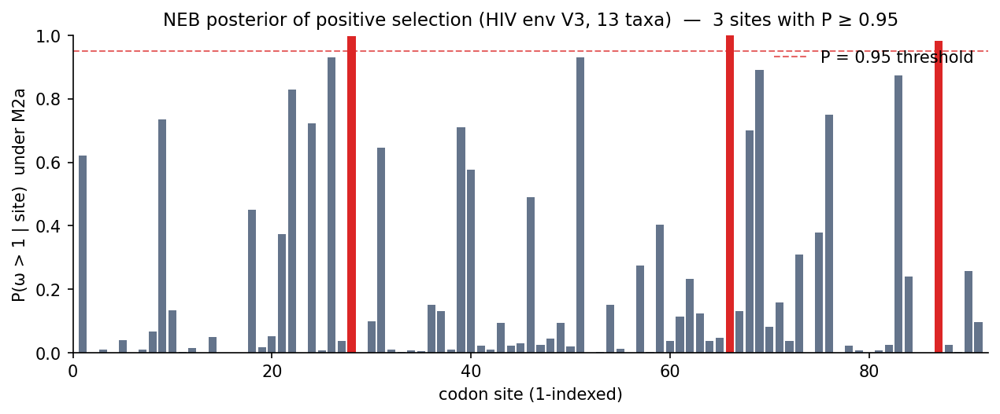

Detecting positive selection: the M1a vs M2a test with BEB
This tutorial runs the most common selkit workflow: fitting the M1a (nearly-neutral) and M2a (positive-selection) site models, testing them against each other with a likelihood-ratio test (LRT), and pinpointing which codon positions carry the signal via Bayes Empirical Bayes (BEB) posterior probabilities.
Dataset: Same 13-taxon HIV envelope V3 codon alignment used in tutorial 01.
Hypothesis answered: Are any codons in my alignment under positive selection (ω > 1), even if the gene-averaged ω is close to 1?
Why M0 is not enough
Tutorial 01 showed that M0 returns ω = 0.90 for this alignment — close to neutral. But that single number is a gene-wide average. It hides everything that varies across sites.
Consider the realistic bimodal scenario: 80 % of sites are under strong purifying selection (ω ≈ 0.05), 2 % are under strong positive selection (ω ≈ 5), and the rest are neutral. If you average those with their proportions you can easily recover a gene-average ω near 1 — even though the biology is anything but neutral. M0 cannot detect that signal because it has no mechanism to represent site-class heterogeneity.
To detect positive selection at specific sites you need site heterogeneity models that allow ω to vary across codon positions.
The models in a nutshell
M1a (nearly-neutral) — the null
M1a partitions sites into two classes:
Class 0 — proportion p₀, rate ω₀ ∈ (0, 1). Sites under purifying selection.
Class 1 — proportion 1 − p₀, rate ω = 1. Neutral sites.
Critically, M1a has no positive-selection class. It is the null model for the M1a vs M2a LRT.
M2a (positive-selection) — the alternative
M2a extends M1a by adding a third site class:
Class 0 — proportion p₀, rate ω₀ ∈ (0, 1). Purifying.
Class 1 — proportion p₁, rate ω = 1. Neutral.
Class 2 — proportion p₂ = 1 − p₀ − p₁, rate ω₂ ≥ 1. Positive selection.
If ω₂ > 1 and the LRT is significant, there is a site class evolving faster than neutral — the hallmark of positive selection.
The LRT
M2a nests M1a (set p₂ = 0, ω₂ = 1 and you recover M1a), so a standard LRT applies:
2 · (lnLM2a − lnLM1a) ~ χ²(df = 2)
Two degrees of freedom because M2a adds two parameters (p₂ and ω₂) relative to M1a. A significant result — by convention p < 0.05 — is taken as evidence for a positive-selection site class.
{kind=link}

Which LRT to trust, and what significance means. M1a vs M2a is the primary test for positive selection; M7 vs M8 is a more flexible alternative with a beta-distributed ω null; M8a vs M8 is a boundary test discussed in tutorial 03.
Step 1: Download the dataset
If you worked through tutorial 01 you already have these files. Otherwise download them now:
curl -O https://raw.githubusercontent.com/JLSteenwyk/selkit/main/tests/validation/corpus/hiv_13s/alignment.fa
curl -O https://raw.githubusercontent.com/JLSteenwyk/selkit/main/tests/validation/corpus/hiv_13s/tree.nwk
Step 2: Fit M0, M1a, and M2a
Pass all three models in a single run. selkit fits them in parallel, so adding M0 and M1a alongside M2a costs very little extra time.
selkit codeml site-models \
--alignment alignment.fa \
--tree tree.nwk \
--output results/ \
--models M0,M1a,M2a \
--n-starts 2 --seed 0 --threads 2
Flags used:
--models M0,M1a,M2a— fit exactly these three models.--n-starts 2— two independent optimisation starts; the best is kept.--seed 0— deterministic starting values; reproduce this exact run anytime.--threads 2— run two models concurrently.
Expected runtime: approximately 1 minute on a laptop with 2 threads.
Step 3: Interpret the console summary
When the run completes selkit prints two tables:
M0 ━━━━━━━━━━━━━━━━━━━━━━━━━━━━━━━━━━━━━━━━ done
M1a ━━━━━━━━━━━━━━━━━━━━━━━━━━━━━━━━━━━━━━━━ done
M2a ━━━━━━━━━━━━━━━━━━━━━━━━━━━━━━━━━━━━━━━━ done
selkit codeml site-models
┏━━━━━━━┳━━━━━━━━━━━┳━━━━━━━━━━━━━━━━━━━┳━━━━━━━━━━━┓
┃ model ┃ lnL ┃ omega (or omega2) ┃ converged ┃
┡━━━━━━━╇━━━━━━━━━━━╇━━━━━━━━━━━━━━━━━━━╇━━━━━━━━━━━┩
│ M0 │ -1137.688 │ 0.9013 │ yes │
│ M1a │ -1114.642 │ 0.0788 │ yes │
│ M2a │ -1106.445 │ 3.6259 │ yes │
└───────┴───────────┴───────────────────┴───────────┘
LRTs
┏━━━━━━┳━━━━━━━┳━━━━━━━━┳━━━━┳━━━━━━━━━━━┳━━━━━━┓
┃ null ┃ alt ┃ 2dlnL ┃ df ┃ p ┃ sig. ┃
┡━━━━━━╇━━━━━━━╇━━━━━━━━╇━━━━╇━━━━━━━━━━━╇━━━━━━┩
│ M1a │ M2a │ 32.787 │ 2 │ 0.0002756 │ * │
└──────┴───────┴────────┴────┴───────────┴──────┘
Reading the fits table:
M0 — ω = 0.90 is the gene-averaged rate. As discussed above, this average conceals site-level heterogeneity.
M1a — the “omega” column shows ω₀ = 0.079, the rate of the purifying site class. The estimated proportion p₀ ≈ 0.484 means roughly half of sites are under strong purifying selection; the remaining half are neutral at ω = 1.
M2a — the “omega” column shows ω₂ = 3.63, the rate of the positive-selection class. The proportion p₂ is not displayed in the console table but is available in
results/fits.tsv; from those parameters p₂ ≈ 0.18, meaning approximately 18 % of sites are inferred to be under positive selection.
Note
The 2dlnL column in the console LRT table displays 32.787 for M1a vs M2a.
This value is affected by a console display issue that double-counts the test
statistic. The authoritative value is in results/lrts.tsv (see below). The
p-value shown is computed correctly regardless.
Reading results/lrts.tsv directly:
null alt delta_lnL df p_value test_type significant_at_0_05
M1a M2a 16.393463 2 0.000275553 chi2 true
The delta_lnL field stores the LRT test statistic 2·(lnL:sub:`alt` −
lnL:sub:`null`) — that is, 2·(−1106.445 − (−1114.642)) = 16.39 — despite the
field name suggesting a raw lnL difference. The p_value is computed from this
corrected statistic and is the number to report: p = 2.8 × 10⁻⁴.
The M1a vs M2a LRT is strongly significant. There is a site class under positive selection in this alignment.
Step 4: Which sites? BEB posterior probabilities
A significant LRT tells you that a positive-selection class exists; it does not say which codon positions belong to it. The Bayes Empirical Bayes (BEB) analysis answers that question.
After the run, results/beb_M2a.tsv contains one row per codon with the posterior
probability that the site falls in the positive-selection class:
p_positive = P(ω > 1 | site data)
By convention, sites with p_positive ≥ 0.95 are called significant BEB candidates.
{kind=link}

Per-site posterior probability of positive selection under M2a. Red bars are sites with P ≥ 0.95. For this HIV env V3 alignment, 3 sites (28, 66, 87) clear the conventional 0.95 threshold.
Step 5: Extract significant sites
Filter the BEB table to sites above the 0.95 threshold with a single awk call:
awk -F'\t' 'NR == 1 || $2 >= 0.95' results/beb_M2a.tsv
Output:
site p_positive mean_omega
28 0.997084 3.617758
66 0.998982 3.622741
87 0.981819 3.577679
Three codon positions — 28, 66, and 87 (1-indexed) — exceed the 0.95 threshold. Their posterior-mean ω hovers around 3.6, fully consistent with the M2a-estimated ω₂ = 3.63. These positions are the top candidates for downstream validation: structural mapping, comparative analysis across strains, or functional assays.
Sites that do not clear the threshold are not necessarily neutrally evolving; they simply lack sufficient statistical power given the alignment depth. Treat the BEB list as a prioritised hypothesis set, not a definitive catalogue.
Python API one-liner
For scripted or pipeline use, the same analysis runs entirely in Python:
from selkit import codeml_site_models
result = codeml_site_models(
alignment="alignment.fa", tree="tree.nwk",
output_dir="results/", models=("M0", "M1a", "M2a"),
n_starts=2, seed=0, threads=2,
)
m1a_m2a = next(l for l in result.lrts if l.null == "M1a" and l.alt == "M2a")
if m1a_m2a.significant_at_0_05:
sig_sites = [s.site for s in result.beb["M2a"] if s.p_positive >= 0.95]
print(f"Positive selection detected. Sig sites: {sig_sites}")
result.lrts is a list of LRTResult objects; result.beb is a dict keyed
by model name. The same output files are written regardless of whether you use the
CLI or the Python API.
What next?
Tutorial 03 covers the beta-distributed ω models — M7 (beta null) and M8 (beta + positive-selection class) — and the boundary test M8a vs M8, which is more appropriate when the positive-selection class is expected to be near ω = 1. It also explains when to prefer M7/M8 over M1a/M2a and how to interpret a significant M8a vs M8 result.